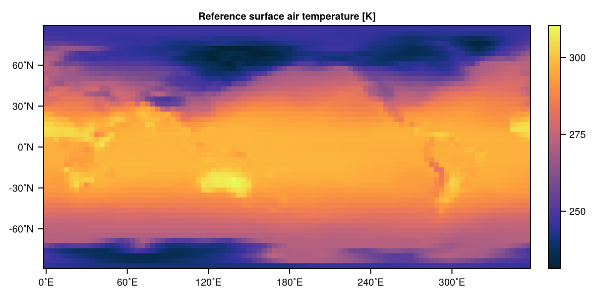

Evaluation
To evaluate how good your albedo is, after the simulation ran do
evaluate(my_albedo, simulation)This compares the simulated surface temperature to a reference surface temperature and returns several scores, all a root mean square error (RMSE) in Kelvin. Lower is better! Note that you only receive data for the eastern hemisphere (0˚-180˚E) but submissions are evaluated on the whole globe, the western hemisphere is held back to test how well your albedo generalises, see Generalisation score.
Score
The total score is the area-weighted RMSE of the surface air temperature $T$ on the last time step against the reference $T_{ref}$ over all grid points $i$
\[\text{RMSE} = \sqrt{\frac{\sum_i w_i \left(T_i - T_{ref,i}\right)^2}{\sum_i w_i}}\]
with weights $w_i$ the area of each grid cell, so that the many small grid cells near the poles don't count more than the large ones near the equator. The reference surface temperature is read from data/reference_surface_temperature.nc in the repository, an OctahedralGaussianGrid with nlat_half = 24, the default grid for SpectralGrid(truncation = 32) used for all submissions. If you run your simulation on a different grid, the reference is interpolated onto it. You can also pass your own reference field to evaluate(my_albedo, simulation; reference). The reference is the time-mean surface air temperature of a SpeedyWeather simulation from 15 January to 15 February 2000, run at higher resolution on a FullGaussianGrid with nlat_half = 96 and interpolated down, see data/create_reference.jl.
using Chiaroscuro, CairoMakie
reference = Chiaroscuro.reference_surface_temperature()
heatmap(reference, title = "Reference surface air temperature [K]", colormap = :thermal)
Regional scores
To make things more interesting, the same RMSE is also computed only over certain regions of the globe
| Score | Region |
|---|---|
score | Global, used to rank submissions on the Chiaroscuro leaderboard |
land_score | Land, every grid cell additionally weighted by its land fraction |
ocean_score | Ocean, every grid cell additionally weighted by its ocean fraction (1 - land fraction) |
tropical_score | Tropics, between 30˚S and 30˚N |
polar_score | Polar regions, poleward of 60˚N and 60˚S |
generalisation_score | Western hemisphere, 180˚E-360˚E (= 180˚W-0˚), see Generalisation score |
An albedo that works well over the ocean may not over land, and the tropics are quite different from the poles. All scores are shown on the Chiaroscuro leaderboard, so you can also try to win in a given category.
Generalisation score
As a participant you only receive reference data for the eastern hemisphere (0˚-180˚E, Europe, Africa, Asia, Australia) to develop and train your albedo, but your submission is evaluated here on the whole globe. The western hemisphere (180˚-360˚E, i.e. 180˚W-0˚, the Americas and most of the Pacific) is held back as a test set: the generalisation_score is the same area-weighted RMSE as above but only over the western hemisphere, data you have never seen.
\[\text{generalisation score} = \sqrt{\frac{\sum_{i \in \text{west}} w_i \left(T_i - T_{ref,i}\right)^2}{\sum_{i \in \text{west}} w_i}}\]
This tests whether your albedo has captured the physics, e.g. that snow and sea ice are bright and forests are dark, rather than memorised the eastern hemisphere. An albedo that is overfitted to the data you have, say by depending on longitude or on very specific combinations of inputs that only occur in the east, will likely do well in the east but poorly in the west. A good albedo has a generalisation score similar to its score on the eastern hemisphere.
The total score (global, both hemispheres) is still used for the ranking, the generalisation score is shown next to it on the Chiaroscuro leaderboard. Note that you can always compute the generalisation_score yourself with evaluate, but the data you have doesn't tell you how good the western-hemisphere temperatures really are, only the evaluation here can.